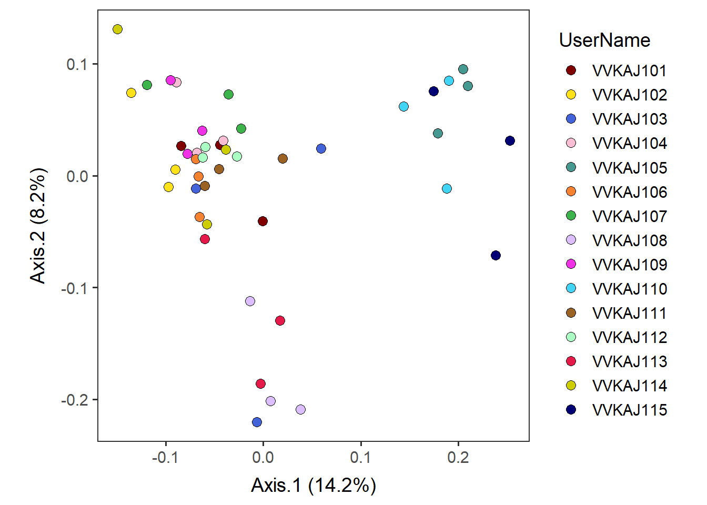
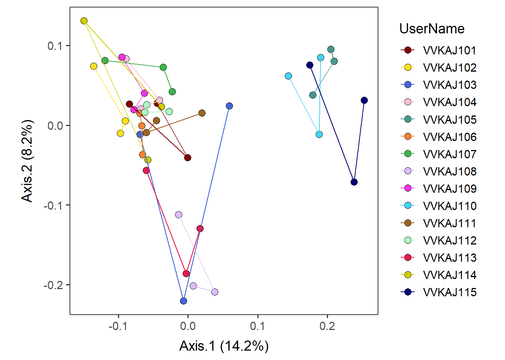

Visualize ordination
Name the path to DietR directory where input files are pulled.
main_wd <- "~/GitHub/DietR"Load the necessary packages.
library(ggplot2)Load the necessary functions.
source("lib/specify_data_dir.R")
source("lib/ggplot2themes.R")Load the distinct 100 colors for use.
distinct100colors <- readRDS("lib/distinct100colors.rda")You can come back to the main directory by:
setwd(main_wd)Load ordination results
Change to the folder called “Unifrac” in your “VVKAJ” folder.
Specify the directory where the data is.
SpecifyDataDirectory(directory.name= "eg_data/VVKAJ/Unifrac/")Read in the metadata and users’ Axis values.
meta_usersdf <- read.table("4Lv_ordinated_Weighted_meta_users.txt", header=T)Take a look at meta_usersdf_loaded.
head(meta_usersdf,3)## Row.names SampleID UserName StudyDayNo Diet Gender Age Weight
## 1 vvkaj.00001 vvkaj.00001 VVKAJ101 1 Vegetarian M 31 79
## 2 vvkaj.00002 vvkaj.00002 VVKAJ101 2 Vegetarian M 31 79
## 3 vvkaj.00003 vvkaj.00003 VVKAJ101 3 Vegetarian M 31 79
## Height BMI Waist.Circumference Axis.1 Axis.2 Axis.3
## 1 186 22.83501 80 -0.10461756 0.03466870 -0.003893643
## 2 186 22.83501 80 -0.06180756 -0.12335486 -0.050884187
## 3 186 22.83501 80 -0.08683209 -0.02997397 0.123098653
## Axis.4 Axis.5 Axis.6 Axis.7 Axis.8 Axis.9
## 1 -0.09334767 -0.130461083 -0.07752561 -0.006092689 -0.05943245 -0.04339574
## 2 -0.06280652 0.081075016 -0.03091141 -0.019005155 -0.14894653 0.13209731
## 3 0.04024638 -0.008896418 0.00331667 0.104152601 0.05477010 0.10475290
## Axis.10
## 1 -0.03007552
## 2 0.01036006
## 3 -0.07487135Read in the eigenvalues for axis labels of biplots.
eigen_loaded <- read.table("4Lv_ordinated_Weighted_eigen_percent.txt", header=T)Plot Axis 1 and Axis 2 to show the separation of samples colored by UserName, gender, timing, etc. in the metadata
By UserName
by_user <- ggplot(meta_usersdf, aes(x=Axis.1, y=Axis.2, color=UserName)) +
geom_point(aes(color=UserName), size=2) +
scale_color_manual(values = distinct100colors) + # OR use viridis theme.
# scale_color_viridis_d() +
xlab( paste("Axis.1 (", paste(round(eigen_loaded[1,2]*100, 1)), "%)", sep="") ) +
ylab( paste("Axis.2 (", paste(round(eigen_loaded[2,2]*100, 1)), "%)", sep="") ) +
no_grid + space_axes + theme(aspect.ratio = 1)by_user
Save by_user plot as a PDF.
ggsave("4Lv_ordinated_Weighted_Axis12_users.pdf", by_user,
device="pdf", height=6, width=6, unit="in", dpi=300)Add lines to connect samples in the order in which they appear in the data using geom_path.
[NOTE] geom_line connects in the order of the variable (small to large) on the x axis, so it could be misleading.
by_user_pathconnected <- by_user + geom_path(aes(color = UserName)) by_user_pathconnected
Save by_user_pathconnected as a PDF.
ggsave("4Lv_ordinated_Weighted_Axis12_users_pathconnected.pdf",
by_user_pathconnected, device="pdf", height=6, width=6, unit="in", dpi=300)By diet (Vegan, Vegetarian, Keto, American, and Japanese)
by_diet <- ggplot(meta_usersdf, aes(x=Axis.1, y=Axis.2, color=Diet)) +
geom_point(aes(color=Diet), size=2) +
scale_color_manual(values = distinct100colors) + # OR use viridis theme.
# scale_color_viridis_d() +
xlab( paste("Axis.1 (", paste(round(eigen_loaded[1,2]*100, 1)), "%)", sep="") ) +
ylab( paste("Axis.2 (", paste(round(eigen_loaded[2,2]*100, 1)), "%)", sep="") ) +
no_grid + space_axes + theme(aspect.ratio = 1)by_diet
You can add ellipses at a desired confidence level.
by_diet_ellipses <- by_diet + stat_ellipse(level=0.95) by_diet_ellipses
Save by_user_diet_ellipses as a PDF.
ggsave("4Lv_ordinated_Weighted_Axis12_diet_ellipses.pdf", by_diet_ellipses,
device="pdf", height=6, width=6, unit="in", dpi=300)Make polygons by diet.
by_diet_polygons <- by_diet + geom_polygon(aes(fill = Diet)) +
geom_point(aes(color = Diet), size=2) +
scale_fill_manual(values = distinct100colors)by_diet_polygons
Save by_diet_polygons as a PDF.
ggsave("4Lv_ordinated_Weighted_Axis12_diet_polygons.pdf",
by_diet_polygons, device="pdf", height=6, width=6, unit="in", dpi=300)Change colors for specific user(s)
[A] Highlight one sample with others being grey
Specify which user to highlight; e.g. VVKAJ101.
select_point_1 <- subset(meta_usersdf, UserName=="VVKAJ101") panelA <- by_user +
geom_point(size=2, color="grey") +
geom_point(data=select_point_1, aes(x=Axis.1, y=Axis.2), color="black", size=2) panelA
Save the panel as a PDF.
ggsave("4Lv_ordinated_Weighted_Axis12_users_VVKAJ101_grey.pdf",
panelA, device="pdf", height=6, width=6, unit="in", dpi=300)[B] Highlight multiple samples with others being grey
Specify colors for each samples to be highlighted in the scale_color_manual argument.
select_points <- subset(meta_usersdf, UserName=="VVKAJ101" | UserName=="VVKAJ106" )It is OK to see a message: “Scale for ‘colour’ is already present.
Adding another scale for ‘colour’, which will replace the existing scale.”
panelB <-
by_user +
geom_point(data=select_points, aes(x=Axis.1, y=Axis.2, color=as.factor(UserName))) +
scale_color_manual(values = c("VVKAJ101"="red", "VVKAJ106"="blue")) ## Scale for 'colour' is already present. Adding another scale for 'colour',
## which will replace the existing scale.panelB
Save the panel as a PDF.
ggsave("4Lv_ordinated_Weighted_Axis12_users_VVKAJ101_106_grey.pdf",
panelB, device="pdf", height=6, width=6, unit="in", dpi=300)[C] Highlight one sample; other points will retain their original colors
select_point_1 <- subset(meta_usersdf, UserName=="VVKAJ101") Changing the shape sizes might help find the dots. Note that points may be overlapping
panelC <- by_user +
geom_point(data=select_point_1, aes(x=Axis.1, y=Axis.2), color="black", size=4) panelC
Save the panel as a PDF.
ggsave("4Lv_ordinated_Weighted_Axis12_users_VVKAJ101_color.pdf",
panelC, device="pdf", height=6, width=6, unit="in", dpi=300)[D] Highlight multiple samples; other points will retain their original colors
select_point_1 <- subset(meta_usersdf, UserName=="VVKAJ101")
select_point_2 <- subset(meta_usersdf, UserName=="VVKAJ106") panelD <- by_user +
geom_point(data=select_point_1, aes(x=Axis.1, y=Axis.2), color="black", size=4) +
geom_point(data=select_point_2, aes(x=Axis.1, y=Axis.2), color="green", size=4) panelD
Save the panel as a PDF.
ggsave("4Lv_ordinated_Weighted_Axis12_users_VVKAJ101_106_color.png",
panelD, device="png", height=6, width=6, unit="in", dpi=300)